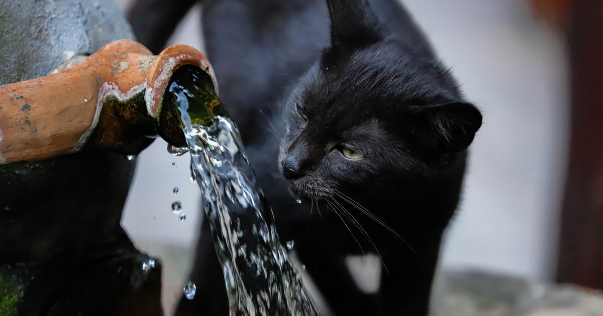

Este post contém links de afiliado. Podemos receber uma comissão em compras feitas através deles, sem custo adicional para você.
Comedouro e bebedouro automático resolvem problemas diferentes — ração e água — e não são substitutos um do outro. A pergunta não é "qual escolher", mas se a sua rotina justifica ter os dois equipamentos.
Key Takeaways
- O comedouro automático programa porções de ração; o bebedouro automático mantém a água em circulação e filtrada, sem programação de horário.
- Gatos costumam beber mais água quando ela está em movimento — por isso bebedouros do tipo fonte são populares mesmo sem função "automática" de horário.
- Kits combinados (comedouro + bebedouro no mesmo produto) existem, mas geralmente sacrificam capacidade em um dos dois lados.
- Se o orçamento for limitado, o comedouro automático tende a resolver o problema mais urgente (jejum prolongado) do que o bebedouro.
- Nenhum dos dois equipamentos dispensa checagem periódica: falhas de energia, obstrução do mecanismo e entupimento do filtro acontecem mesmo em modelos bem avaliados.
guia completo de comedouro automático para pet
Programa a liberação de porções de ração em horários fixos — resolve o problema de rotina alimentar quando o tutor está fora de casa. Veja o comparativo dos mais vendidos para cachorro e para gatos.
Mantém a água circulando e filtrada continuamente (geralmente com filtro de carvão ativado), sem uma "programação" de horário como o comedouro — a água fica disponível o tempo todo, só é renovada com mais frequência e qualidade. Gatos tendem a se sentir mais atraídos pela água em movimento que pela água parada, embora a preferência varie de indivíduo para indivíduo; a baixa ingestão de líquidos na espécie está associada a riscos como cálculos urinários e sobrecarga renal (Hospital Veterinário Cats Londrina, retrieved 2026-08-20).
melhor bebedouro automático para pet
Kits que combinam comedouro e bebedouro automático no mesmo produto existem no Mercado Livre, com capacidades que variam de modelos compactos de ~3L a kits maiores de 10L, dependendo do porte do pet (Amazon.com.br — Comedouro Bebedouro 2 em 1, retrieved 2026-08-20) e podem ser convenientes para quem tem espaço limitado. Na prática, esses kits costumam ter capacidade menor em cada lado do que os produtos dedicados — um bom compromisso para apartamentos pequenos com 1 pet, mas não ideal para quem tem mais de um animal ou porte grande.
Nossa leitura do mercado: cruzando as fichas técnicas de comedouros e bebedouros vendidos separadamente com os kits combinados disponíveis no Mercado Livre, o padrão observado é que a capacidade de cada lado do kit fica visivelmente abaixo da capacidade dos produtos dedicados equivalentes — o que reforça que kits combinados fazem mais sentido como solução de espaço do que como economia real de capacidade.
A recomendação geral é que gatos ingiram entre 40 e 60 mL de água por quilo ao dia — abaixo disso, aumenta o risco de problemas urinários e renais, o que reforça por que manter a água limpa e em movimento importa tanto quanto a ração programada (Royal Canin, retrieved 2026-08-20).
O filtro de carvão ativado de um bebedouro automático geralmente precisa ser trocado a cada 2 a 4 semanas, dependendo do uso e da qualidade da água local. Além da troca do filtro, o reservatório e a bomba interna merecem limpeza semanal com escova macia, já que resíduos de biofilme (uma camada viscosa que se forma no contato prolongado com água parada em cantos do equipamento) podem se acumular mesmo em bebedouros com boa circulação.
No comedouro automático, o ponto de atenção é diferente: gordura da própria ração pode se acumular no mecanismo de liberação e no pote, favorecendo a proliferação de fungos e atraindo insetos se a limpeza não for feita com regularidade. Uma limpeza semanal do reservatório e do pote, com atenção redobrada em modelos que ficam em ambientes mais úmidos, evita a maior parte desses problemas.
guia completo de comedouro automático para pet
Sim, principalmente do lado do bebedouro. Gatos tendem a preferir água em movimento e recipientes mais largos e rasos, enquanto cães costumam se adaptar bem a bebedouros convencionais, com ou sem circulação. Do lado do comedouro, a diferença está mais na granularidade da porção do que no tipo de equipamento, como detalhado no comparativo entre comedouro automático para gato x cachorro.
O erro mais comum é posicionar comedouro e bebedouro muito próximos um do outro. Alguns pets, especialmente gatos, evitam beber água perto do local onde comem, um comportamento associado a instintos de sobrevivência (na natureza, água parada perto de comida pode indicar contaminação). Separar os dois equipamentos por pelo menos um ou dois metros costuma resolver esse problema sem custo adicional.
Outro erro é configurar o comedouro automático e o bebedouro automático em tomadas ou circuitos elétricos diferentes sem verificar a autonomia de bateria de cada um. Se o comedouro tem bateria backup mas o bebedouro não, uma queda de energia mais longa pode deixar o pet sem água circulando mesmo com a ração garantida, o que é especialmente relevante em dias muito quentes.
| Cenário | Comedouro sozinho | Comedouro + Bebedouro |
|---|---|---|
| 1 pet, rotina previsível de água (tigela trocada diariamente) | Suficiente | Opcional |
| Tutor ausente por longos períodos | Essencial | Recomendado |
| Gato que bebe pouca água (comum na espécie) | Não resolve | Bebedouro tipo fonte ajuda a estimular consumo |
| Múltiplos pets | Depende da capacidade | Reduz manutenção diária |
Se você só pode investir em um equipamento agora, o comedouro automático costuma resolver o problema mais urgente (alimentação em horário fixo). O bebedouro automático é um complemento valioso, especialmente para gatos, mas não é indispensável na mesma medida. Quando o orçamento permitir, os dois juntos reduzem a manutenção diária e cobrem tanto a alimentação quanto a hidratação do pet de forma consistente.
melhor bebedouro automático para pet · vale a pena um comedouro automático
Escrito pela Equipe Smart Pet Gadgets. Veja nossa política editorial e como verificamos as fontes citadas neste artigo.
🐾 Confira o preço e a disponibilidade atual no Mercado Livre.
Ver no Mercado Livre →Link de afiliado: podemos receber uma comissão por compras feitas através deste link, sem custo adicional para você.
Não totalmente. O bebedouro automático mantém a água em circulação e filtrada, o que reduz o acúmulo de bactérias e estimula o consumo, mas o reservatório ainda precisa ser limpo e reabastecido periodicamente, geralmente a cada poucos dias.
Depende do espaço e do número de pets. Kits combinados economizam espaço, mas costumam ter capacidade menor em cada lado do que os produtos dedicados, o que os torna mais indicados para apartamentos pequenos com um único pet.
Sim, embora o benefício seja mais associado a gatos. Cães também podem beber mais água quando ela está em movimento, especialmente os mais sedentários ou idosos, mas a preferência varia bastante entre indivíduos e raças.
Não é recomendado para viagens longas sem qualquer supervisão, mesmo com os dois equipamentos funcionando bem. O ideal é ter alguém checando o funcionamento a cada um ou dois dias, já que falhas de energia, obstrução do mecanismo ou entupimento do filtro podem acontecer.
Nildo Alves — curadoria de produtos pet no Smart Pet Gadgets. Testa e pesquisa produtos para cães e gatos, cruzando especificações de fabricante com boas práticas veterinárias e dados de mercado.
Sobre o Smart Pet Gadgets · Contato · Política editorial e de afiliados